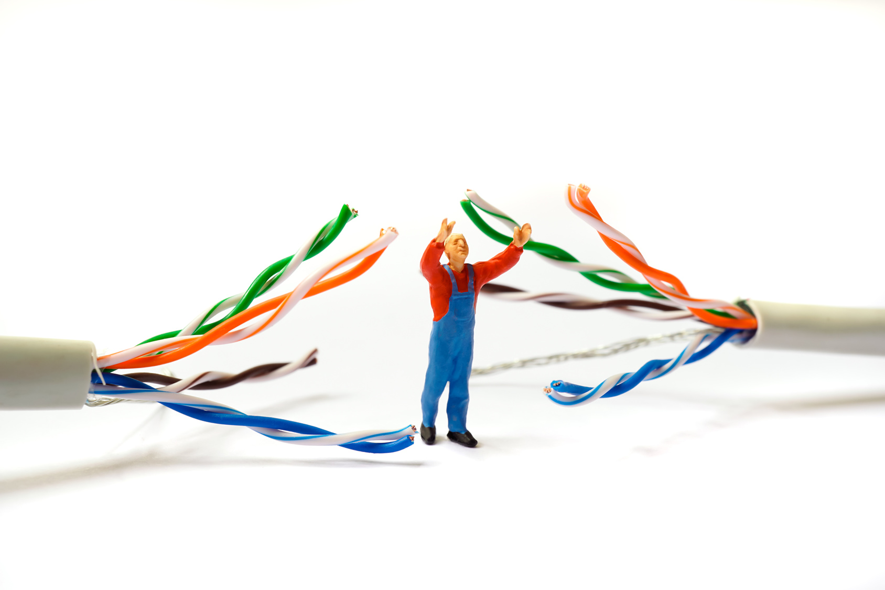
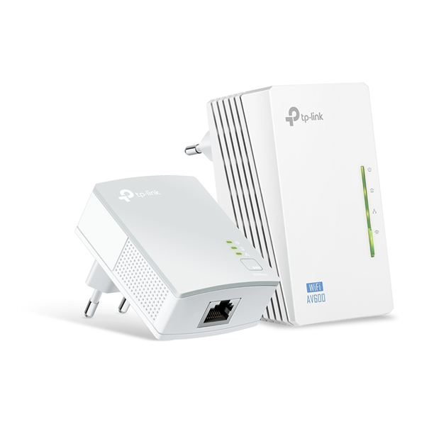
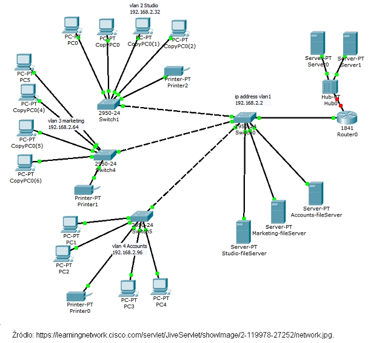

Celem zajęć jest przekazanie wiedzy dotyczącej budowy i zasady działania sieci komputerowych oraz architektury Internetu. Materiał obejmuje również treści dotyczące bezpieczeństwa w sieciach korporacyjnych oraz w Internecie. Pokazy i ćwiczenia pokazują praktyczne funkcjonowanie sieci komputerowych, w tym bezprzewodowych.

Poznasz także wiele urządzeń sieciowych, takich jak transmiter PLC, który przesyła Internet, wykorzystując do tego sieć elektryczną budynku.

